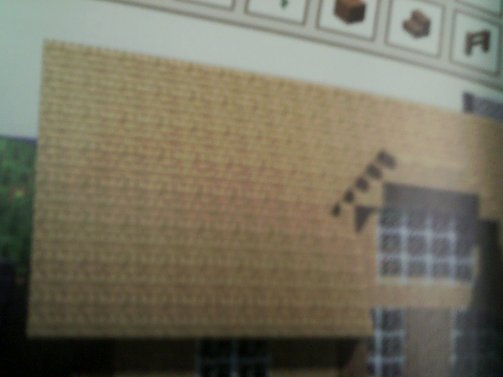

|
minecraft rocks!!!
microsoft sukes!!!!!!!!
help us SAVE Terria and mincraft .
Hi Im Nickhom I like mincraft.
Hi Im mad man
LOL
Minecraft Universe NOT THE YOUTUBER!
|
- How to build a house on minecraft
Materials
- any type of wood plancks but you must have a lot, about 102
what to do
- Do 10 by 10 blocks
-
- Next make it 5 blocks high
- leave 2 blocks high and pleace a door
CRAFT stairs and place them on a flat roof up so it is like this.

if you are advanced you can do redstone doors and lights.
|